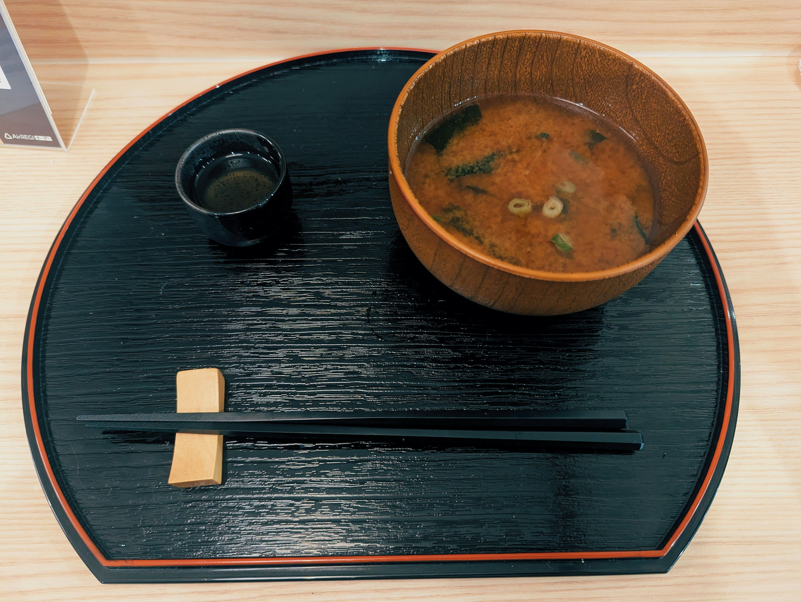
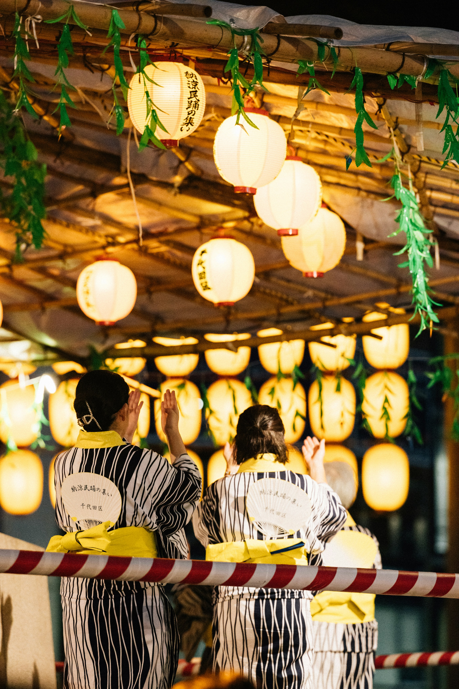

Exploring Japanese Culture
L2-L3 · Food and Dining Customs

Food is an essential aspect of Japanese culture that links present times with history, regionalism, and seasons. In Japanese, the meals are composed of rice, soup, vegetables, and a main dish that usually consists of several small parts rather than one big dish.[Source]
“Itadakimasu” is commonly said before eating as an expression of gratitude.
Also, dining customs take into account the care about other people, people eat by saying "itadakimasu" before and "gochisōsama deshita" after having dinner. People use chopsticks for eating a variety of dishes, there are some taboos related to using chopsticks, for example, passing dishes from one pair of chopsticks to another one.[Source]
In addition, there are seasonal ingredients used in the Japanese cuisine. They are reflected in the choice of the dish depending on the season. For example, such traditional dishes as sushi, miso soup, soba, and tempura are known, but there is also local cuisine.[Source]
L4-L5 · Traditions in Everyday Life

Japanese culture does not confine traditions to special occasions or important events alone. They form an integral part of the day-to-day lives of many people. In certain families, at schools, and even at traditional sites, one should take off their shoes before entering the room.
The season festivals are known as the matsuri, and these are conducted through the year in various cities of Japan. These festivals have significance as some of them reflect history or religion, whereas others might relate to some seasonal celebration. The festival usually consists of music and dances, and even food stalls. Despite variations in the celebrations throughout Japan, these festivals serve as a means to bond with the community and pass down the tradition from generation to generation.[Source]
The traditional clothing holds great significance in Japanese culture. The Kimono is the dress that represents any important occasion, celebration, or cultural events, while the Yukata is the light version of the dress and is worn during the summer festival.[Source]
There is a continuous transformation happening in Japanese culture and at the same time it remains rooted in the past. There are aspects of modernity like technology, fashion, and entertainment alongside with some traditional aspects of life like city life. Such a situation indicates that the culture changes but at the same time it remains connected to its past.
Traditional Arts and Modern Influence
Another manifestation of Japanese cultural heritage in the lives of its people is the traditional arts. Such types of art as calligraphy, origami, pottery, and tea ceremonies are manifestations of patience and creativity, which are characteristic features of Japanese culture. These traditional art forms have been preserved in Japan since ancient times and continue to be cultivated by the population of the country. People engage in traditional art forms either because they want to master a certain skill or because they want to know something about the history of Japan.[Source]
“Tradition and modern creativity continue to shape Japanese culture side by side.”
At the same time, the cultural heritage of Japan is supplemented with the development of modern creative spheres, which include anime, manga, video games, fashion, and design. They are also the elements of Japanese culture that have become known to the whole world, but do not replace the traditional art forms of Japan.
Another instance of the intersection of the two is the Japanese tea ceremony. This ceremony involves the preparation and consumption of matcha, which is a type of green tea that has been ground into powder form. All these activities are performed through a number of processes. There is preparation involved in addition to the use of various utensils and the environment as well. The process itself is linked with hospitality and appreciation of the present moment. However, not everybody partakes in tea ceremonies frequently.